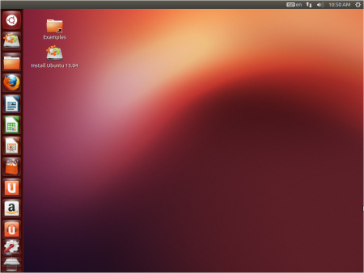
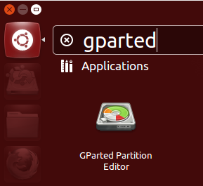
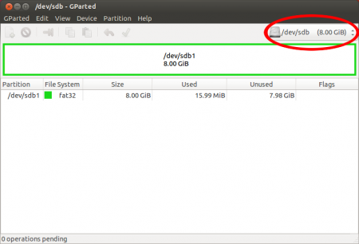
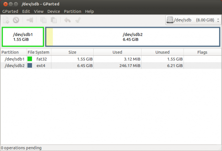
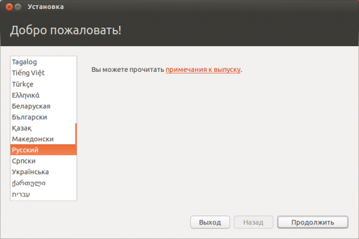
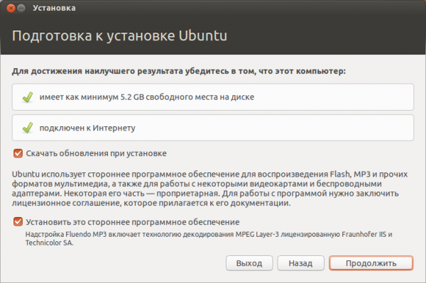
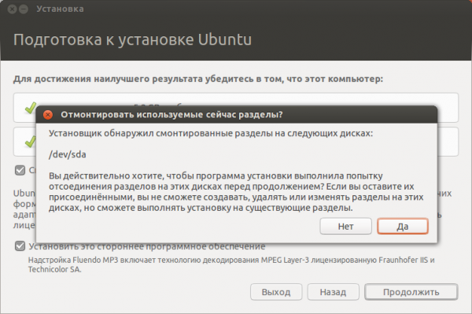

Установка полноценной Ubuntu на USB-накопитель
Очень часто у людей возникает желание или необходимость поставить Ubuntu на USB-накопитель и получить возможность пользоваться своей ОС на любом компьютере (лишь бы была возможность загрузится с USB).
В этой статье описывается процесс установки Ubuntu на USB-накопители.
Не стоит путать установку с простой записью образа. Подробнее о записи образов на на USB-накопители смотрите в Usb-creator-gtk.
Некоторые важные замечания и полезная информация собраны в статье Установка и использование Ubuntu на USB флешке. Стоит ознакомиться с ней перед началом установки Ubuntu на USB-накопитель.
Скачайте образ системы отсюда. Если не планируете запускать систему на машинах с более 4 Гб оперативной памяти предпочтительней выбирать 32-х разрядную.
После того, как образ загрузился, его надо записать на CD или USB-накопитель.
На USB носитель образ проще всего записать при помощи UNetbootin. Эта программа существует под большинство популярных ОС (Windows, Linux, Mac) и достаточно проста в обращении. Все что потребуется – указать путь к скачанному образу и выбрать диск, на который будет записан образ.
Можно обойтись без записи образа на какие-либо носители воспользовавшись виртуальной машиной, например VirtualBox или QEMU. Достаточно лишь пробросить в виртуальную машину USB-накопитель. Дальнейшие инструкции для этого метода не поменяются.
Перед тем как загрузится, убедитесь, что в BIOS первым загрузочным устройством выбран USB или CD-ROM, в зависимости от того, с чего вы производите загрузку. В BIOS можно попасть нажав клавишу Del для стационарных компьютеров и F2 или F12 для ноутбуков. О том, как выбрать устройство для загрузки смотрите в интернете или читайте инструкцию к вашему компьютеру.
Если все правильно сделано, вы увидите перед собой загруженную с Live CD систему.

Запустите программу GParted. 
Выберите устройство, на которое вы собираетесь установить Ubuntu. 
Отформатируйте его в файловую систему Ext2 или Ext4. Так-же можно разделить USB-диск на 2 раздела для того, чтоб его можно было использовать по прямому назначению (перенос файлов с одного компьютера на другой). Для этого первый раздел раздел отформатируйте в FAT32 (для того, чтобы раздел был виден в Windows), вторым разделом выберите файловую систему Ext2 или Ext4 под Ubuntu. На второй раздел желательно выделить минимум 6 Гб, чтобы можно было не переживать за нехватку места для установки дополнительных программ. 
Перед установкой желательно настроить интернет для скачивания обновлений и не свободных дополнений.
Дальнейшая установка Ubuntu ничем не отличается от установки на жесткий диск.
Выберите на рабочем столе Install Ubuntu и выполните установку по скриншотам:



Главное - не забудьте указать установщику что GRUB надо установить на флеш-накопитель (по умолчанию он ставится на первый жесткий диск в системе).